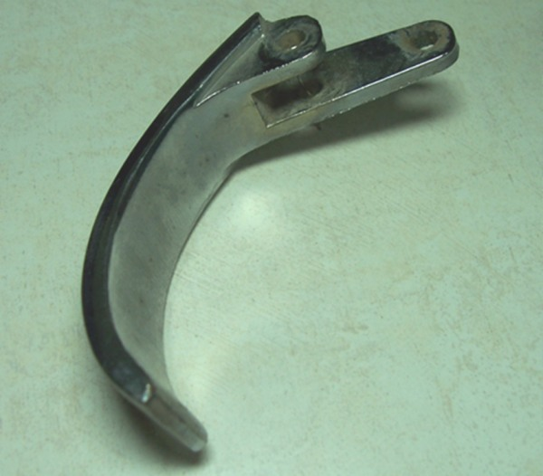
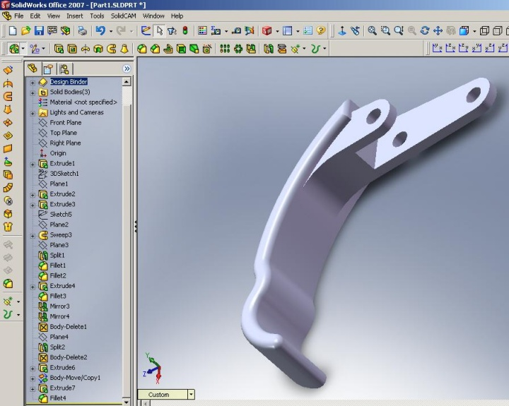

|
CAD/CAM/CNC Entegrasyonu
CAD/CAM sistemlerinin CNC'lerle entegrasyonu tasarým ve imalat sürecinin bir gereksinimidir.
Aslýnda birbirinden farklý olan bu kavramlar günümüzde küçük iþletmelerde dahi entegre edilmiþ þekilde kullanýlmaktadýr [1,6,11].
CAD
Tasarým-imalat sürecinin ilk basamaðý olarak CAD sistemleri kullanýlýr. CAD sistemlerinde amaç üretilecek parçanýn modellenmesi ve gerekli analizlerinin yapýlmasýdýr. CAD sistemlerinde parçalarýn iki boyutlu ve üç boyutlu modellenmesinde çeþitli operasyonlar ve modüller kullanýlmaktadýr. Bu yöntemlerin seçimi parçanýn tanýmlanabilirliðine baðlýdýr. Bir parça katý olarak, yüzeyleriyle veya tel kafes þeklinde tanýmlanýr. Her parçanýn katý olarak modellenmesi gerekli olmayabilir. Katý modelde parçanýn tüm özellikleri tanýmlanabilir durumdadýr ve tüm analizleri CAD'de yapýlabilir. Makine parçalarý genel olarak katý model þeklinde tasarlanmaktadýr. Katý modellemede döndürerek, öteleyerek veya iki profil arasýný katýlama ya da süpürme gibi operasyonlar kullanýlmaktadýr.
CAM
Üretilecek parçanýn gerekli çizimleri ile oluþturulan model CAM yazýlýmýna aktarýlýr. Bu aþama kullanýlan sisteme göre farklýlýklar gösterebilir. Bazý CAD ve CAM yazýlýmlarý entegre þekilde çalýþýrken bazý yazýlýmlar baðýmsýz çalýþmaktadýr. Entegre çalýþan yazýlýmlarda modelleme ekranýndan direkt olarak CAM'deki iþleme ekranýna geçiþ yapýlýrken, entegre olmayan yazýlýmlarda CAD'de hazýrlanan model kullanýlacak CAM yazýlýmýna uygun bir formatta kaydedilir ve CAM yazýlýmýnda açýlarak iþleme devam edilir. CAM'de öncelikle, CAD'den alýnan tasarým modeli için ölçüler verilerek veya otomatik olarak bir stok model oluþturulur. Stok model, parçanýn iþlenmeden önceki yarý mamul halidir. Baþka bir deyiþle hedef modele ulaþmak için simülasyonda kullanýlan CNC tezgahýna baðlanacak parçadýr. Hedef model ise parçanýn CNC tezgahýndan çýkan iþlenmiþ halidir. Hedef modele ulaþmak için stok model üzerinde yapýlacak iþlemler, uygun takýmlar ve uygun takým yollarý belirlenir. CAM'de, yapýlan iþlemlerin simülasyonu izlenir ve dalmalar varsa düzeltilerek takým yollarý doðrulanýr.
CNC
CAM'de yapýlan doðrulamanýn ardýndan CNC takým tezgahlarýna bu bilgilerin aktarýlmasý için gerekli olan NC kodlarý yazdýrýlýr. Bu dönüþüm sýrasýnda dikkat edilmesi gereken parametrelerden bir tanesi de kullanýlacak olan CNC tezgahýnýn post processor türüdür.
NC kodlarý CNC tezgahýna kablo baðlantýsý ya da hafýza kartý kullanýlarak aktarýlýr. CAM'de belirlendiði þekilde belirlenen boyutlardaki stok model tezgaha baðlanýr. CAM'de belirlenmiþ referans noktasý ve takýmlar ayarlandýktan sonra program çalýþtýrýlýr. Yapýlan iþlem CAM'de yapýlan simülasyonun gerçekleþtirilmesidir. Ýþlem bittiðinde stok modelden hedef model elde edilmiþ olur. Yukarda anlatýlan sürecin akýþ þemasý Þekil 1'de gösterilmektedir.

Þekil 1: CAD/CAM CNC Entegrasyonu
5. Uygulama
Bu çalýþmada amaç, tasarým-üretim sürecini iþletip CAD/CAM/CNC entegrasyonunu gerçekleþtirerek araçlar için ergonomik bir iç kapý kolu prototipi oluþturmaktýr. Bu parçanýn seçilmesinin nedeni; yapýlan küçük çaplý bir araþtýrmada kapý kollarýnýn parmak ergonomisine uygun olmadýðý görüþünün yaygýn olmasýdýr.

Murat 124 marka bir araca ait, alüminyum enjeksiyonla imal edilmiþ kapý iç kolu
Tasarým-üretim sürecinin CAD aþamasýnda SolidWorks ve CATIA yazýlýmlarý tercih edildi. CAM aþamasýnda da iki ayrý yazýlým (EdgeCAM ve SolidCAM) kullanýlarak tasarým-üretim sürecine devam edildi.
SolidWorks ve CATIA ile modellemelerde öteleme ve süpürme operasyonlarý, model düzenlemede de kenar radüsleri için fillet operasyonu ile yardýmcý referans düzlemler kullanýldý. Þekil 2 ve Þekil 3'te geliþtirilen ergonomik iç kapý kolunun tasarýmý gösterilmektedir.

Þekil 2: Tasarlanan kapý kolunun CATIA'daki görüntüsü

Þekil 3: Tasarlanan kapý kolunun SolidWorks'teki görüntüsü
SolidWorks ile SolidCAM entegre yazýlýmlar olduklarý için SolidWorks modelleme ekranýndan SolidCAM ekranýna direkt geçiþ imkaný vardýr. EdgeCAM'de ise DXF (ya da DWG) formatýnda model iki boyutlu olarak ve IGS (ya da STL) formatýnda üç boyutlu olarak CAM ortamýna aktarýlmýþtýr.
|